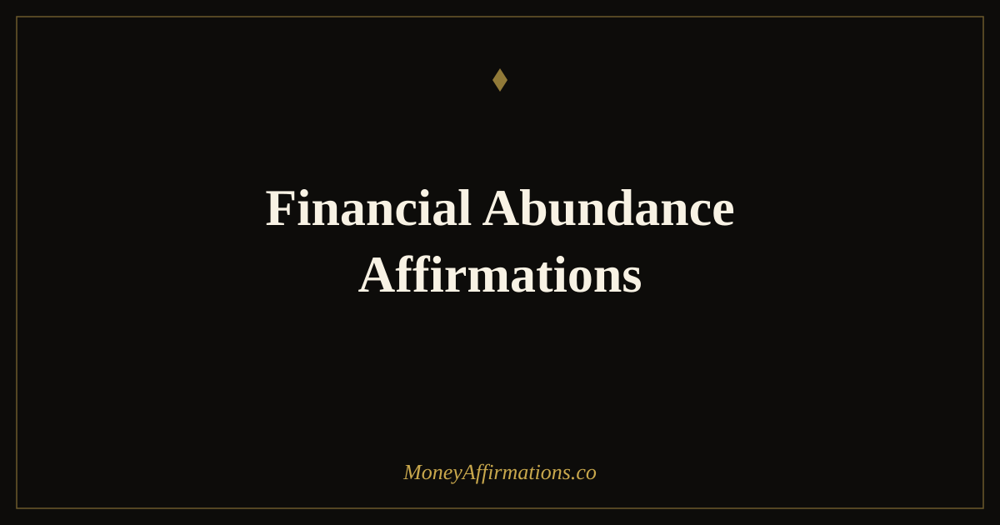

Financial Abundance Affirmations: 30 Statements to Open the Flow

Most people carry a quiet, persistent belief that money is scarce, that it belongs to other people, or that wanting more is somehow greedy or naive. These beliefs rarely announce themselves loudly. They show up as hesitation before checking your balance, guilt after a good month, or a vague sense that real prosperity is meant for everyone except you. That undercurrent shapes financial decisions every day — often without you noticing it.
Financial abundance affirmations work by interrupting those patterns at the source. These 30 statements are designed to shift you from scarcity thinking toward genuine financial openness. They do not require you to perform positivity or pretend difficulties away. They ask only that you try on a more expansive story about your relationship with money — one present-tense statement at a time — and allow your actions to follow from that new ground.
What are financial abundance affirmations?
Financial abundance affirmations are present-tense statements that affirm your capacity to receive, generate, and hold wealth. Unlike general money affirmations, they specifically address the belief that abundance is available to you — not theoretically, but in your actual, current life. They target the gap between knowing prosperity is possible and genuinely feeling worthy of it.
What makes them distinct is their focus on openness rather than effort alone. Many financial affirmations emphasise earning and hustle. Financial abundance affirmations go deeper — they work on the receiving side of the equation, the part that sometimes pushes money away through guilt, unworthiness, or fear of change. When that side softens, the practical work of building wealth becomes less blocked and more aligned with who you are becoming.
30 financial abundance affirmations
- I am open to receiving financial abundance in expected and unexpected ways.
- Money flows to me freely, consistently, and in increasing amounts.
- I am worthy of a financially abundant life, exactly as I am today.
- My relationship with money is healthy, honest, and growing stronger every day.
- I welcome prosperity as a natural part of my everyday experience.
- I earn well, keep well, and grow my wealth with confidence and ease.
- Financial abundance is available to me now, not someday in the future.
- I release every belief that told me I was not meant to be wealthy.
- The more I prosper, the more good I can create in my own life and others'.
- I am aligned with the energy of financial growth and genuine prosperity.
- My income has room to expand, and I am ready and willing to receive more.
- I trust that abundance is the natural state of a focused and open mind.
- I attract opportunities that match my growing sense of financial worth.
- My needs are always met, and my desires are always within reach.
- I allow money to come to me with ease, without guilt or hesitation.
- I am building a financially abundant life through consistent, aligned action.
- Every day I grow more comfortable with having and holding significant wealth.
- I move through the world as someone who expects and receives financial good.
- My financial choices reflect the abundant, capable person I am becoming.
- I am grateful for every sign that financial abundance is increasing in my life.
- I give generously because I know abundance always returns to an open heart.
- Financial security is something I create, maintain, and deserve to enjoy fully.
- I choose to see money as a resource that multiplies when managed with intention.
- I am capable of earning, managing, and growing more money than I ever have before.
- Abundance surrounds me — in relationships, in opportunities, and in financial flow.
- I release the fear of money and welcome it as a trusted part of my life.
- My financial life reflects clarity, confidence, and a deep sense of self-worth.
- I am in the right place at the right time for financial abundance to find me.
- I deserve to live well, to save well, and to grow wealthy without apology.
- I live in financial abundance now and grow more prosperous with every passing day.
How to use these affirmations
The most effective time for financial abundance affirmations is within the first twenty minutes after waking. During this window, the brain transitions from a theta-dominant near-sleep state into alpha and then beta, making it unusually receptive to new belief patterns. Sit upright, read through five or six statements slowly, and pause on any that create resistance. A small inner voice saying "but that's not true" is not a sign to skip that affirmation — it is a signal that you have found exactly where your limiting belief lives. Stay with that statement for an extra breath and repeat it twice.
A second method that deepens the practice is handwriting. Choose three affirmations each morning and copy them into a notebook. After each one, write a single sentence beginning with "Evidence of this today:" and note even the smallest observation — a bill handled calmly, a moment of financial confidence, an opportunity you noticed. This trains the brain to scan for abundance rather than lack, which is the core shift these affirmations are designed to create. Pair the practice with morning affirmations for abundance for a fuller routine.
The scarcity loop: why financial abundance beliefs are so hard to shift
Scarcity mindset around money is not a character flaw — it is often a learned response shaped by early financial stress, family messages about what people "like us" deserve, and a cultural tendency to link worth with wealth. Research by economists Mullainathan and Shafir found that perceived financial scarcity consumes significant cognitive bandwidth, literally reducing the mental space available for creative thinking, long-term planning, and emotional regulation. This creates a self-reinforcing loop: scarcity feels real, which makes resourceful thinking harder, which reinforces the feeling of scarcity.
Financial abundance affirmations interrupt this loop at the belief level. When you repeat a statement like "Money flows to me freely and consistently," you are not engaging in wishful thinking. You are performing what psychologists call cognitive reframing — deliberately introducing a competing narrative that your brain can begin to evaluate for evidence. With consistent practice, the reticular activating system (the neural filter that determines what you notice) starts to prioritise information confirming abundance rather than lack. You begin to see opportunities, resources, and options that were always present but previously filtered out. The affirmations do not create abundance from nothing — they reveal the access points that were already there.
Tips to make them work faster
- Use them before opening financial apps. Say one affirmation immediately before checking your bank account or budget. Pairing belief with real data is more powerful than either alone.
- Spend the most time on resistance. The affirmation that feels least true is often doing the most work. Do not skip it — sit with it longer.
- Say them aloud, not just silently. Hearing your own voice make these claims activates additional neural pathways compared to reading alone. Pace and tone matter.
- Document daily evidence. Write one sentence each morning noting any sign — small or large — that abundance is present in your life. This trains your attention to confirm the new story.
- Connect each affirmation to an action. After repeating "I earn well and grow my wealth," immediately identify one aligned action you can take today. Belief accelerates when followed by movement.
Frequently Asked Questions
Do financial abundance affirmations actually work?
They work when used as part of a broader shift in thinking and behaviour, not as a substitute for action. Research on cognitive reframing shows that repeatedly introducing a new belief changes how the brain filters experience. Over time, you notice more opportunities, feel less blocked by fear, and make more aligned financial decisions. The affirmations do not replace financial skill — they remove the psychological barriers that prevent you from using the skills you already have.
How long before financial abundance affirmations produce results?
Most people notice a shift in how they feel about money within two to four weeks of consistent daily practice. Behavioural changes — in decision-making, habit formation, and opportunity recognition — tend to follow. Significant external results take longer because they depend on action and circumstance, not mindset alone. Measure progress in both directions: internal (how you feel about money) and external (decisions made, habits formed, income changes).
Can I use financial abundance affirmations if I am currently in debt or struggling?
Yes — this is often when they matter most. Scarcity thinking under financial stress narrows your problem-solving capacity and makes it harder to see options clearly. Abundance affirmations create enough psychological breathing room to think more creatively and act from a place of capacity rather than fear. Acknowledging where you are while affirming where you are going is not contradiction — it is how real change begins.
For a broader foundation of statements to support every area of your financial life, explore the full abundance affirmations collection and choose the ones that feel most aligned with where you are right now.